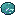
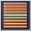
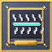
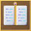
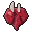
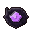
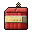

Minecraft · Forge 1.20.1 · Create
Factory Ascension
Your Create factory is your power: every core it builds makes your gear stronger, with no level cap. And every chest, pack and rare mob is a lottery ticket. Protection 3000 isn't a cheat. It's a bigger factory and a lucky pull.
The loop

Find AscenditeA glowing ore between iron and diamond, or press 9 cobblestone into Raw Ascendite.
Power upA Modular Engine burns coal from day one. Add coils as the factory grows. Build coresPresses, mixers or a crafting table turn ores into Ascension Cores and Liquid Essence.
Build coresPresses, mixers or a crafting table turn ores into Ascension Cores and Liquid Essence.- Pull tomesCraft tomes, rip open packs, crack Gear Caches. Right-click a tome onto gear it suits.
- AscendSpend Essence on levels with no cap, then go further out where the loot gets better.
New in 1.1

SalvagerFeed it loot, get Ascension Cores back.
Tome Fusion TableMerge tomes and build Fusions in one screen.
SkinwalkersThat cow has been staring at you for a while.
34 new mobs, 4 bossesRust Walkers, Void Stalkers, the Rust Colossus... and a body part from every mob. Glass and glintsConnected glass, and lights that glint off shiny blocks.
Factory Room TNTA lined, lit factory room in one click, up to 50 x 50. Easy startCasings by hand, belts from leather, cheap cogs and shafts.
Chapter 1
Every chest is a lottery
Enchantment Packs turn up in dungeons, temples, strongholds and End cities: five tome cards each, the last one Rare or better, and any card can come foiled. This opens packs with the game's own odds.
Foils a foil multiplies the tome's level when you apply it
Gear Caches
Relic gear in a sealed crate. What's inside depends on where you open it, so carry it out to the danger zones first.
Jackpots
Card and relic levels have a long lucky tail. Most rolls are normal. Some are not.
of vanilla chests hide a jackpot stack: up to 40 packs, 16 caches, 6 booster boxes or 192 cores.
Rare mobs
Every mob rolls once when it spawns. Kills are announced to the server.
Chapter 2
Four new metals. No two swords alike.
Ascendite takes you past iron; Voidsteel, Celestium and Ascendium take you past netherite. Then condition, attachments and Artifacts make each piece yours.
Condition
Every piece rolls a wear grade once, like a weapon skin. Pristine hits 25% harder. A Polishing Cloth rerolls it and keeps the better grade.
Attachments
Two slots on every piece: hold one next to the gear and right-click. Point at one to see what it does.
Artifacts one of one
Push a piece of gear past total enchant levels and Awaken it: a name, a world serial number, a color and aura, a lore line and 3 to 4 quirks with rolled strengths. There will never be another.
Chapter 3
486 enchants. No ceiling.
Every number here comes straight from the pack's config, so it's exactly what you get in game.
Mythic tomes need Mythic Fragments, which only drop from mobs out in the danger zones, mostly Elites. The factory makes you strong. Exploring makes you strange.
Sneak and hit an enemy, and the game takes over: you blink around it, launch into the sky, call down lightning and land where you started. You can't be hurt mid-combo. Their tomes need Ascended Souls from Ascended bosses, or a Secret Rare pull.
A Chaos Tome rolls a brand-new enchant: a rarity, a name and up to three random effects. This runs the game's own generator, so every seed is a real enchant you could pull.
Chapter 4
Machines of your own
The Full download adds a Forge mod with eleven machines, connected glass, 34 mobs and 4 bosses, in the same gunmetal, teal and gold as the Ascendite gear. Every number is in the
machines section of the config. Point at a block to spin it.
Modular Engine power from day one
An Engine Core plus modules touching it (or each other) in any shape. Coils add stress capacity, Gearboxes raise the speed, and Burners burn any furnace fuel: each lit Burner powers Coils. The shaft comes out of the core's front. Everything is iron, copper and Create's andesite parts, so it's your first power source.
Glass and glints Full download
Connected glass in four kinds: Factory, Ascendite, Gilded and Smoked. Put panes of the same kind together and the frames between them disappear, so a wall of it reads as one big window.
Shiny Reflections: torches, lanterns, glowstone and the sun glint off gold, diamond, iron, copper, quartz, glass, ice and polished
stone, and the glints slide across the surface as you walk, the way a mirror would. No shaders, so it runs on anything (radius and brightness
in config/factoryascension-client.toml).
If a mod that does the same job is installed, the pack turns its own version off and says so in chat, like "The Oculus mod conflicts with this mod's Shiny Reflections feature: Turned Shiny Reflections off." The same goes for Danger Zones (Scaling Health, Champions, Improved Mobs), rare mob variants (Champions, Infernal Mobs) and /home (FTB Essentials).
Factory Room TNT both downloads
Right-click a block: after the fuse it blasts out a room in front of you, lines it, lights it and leaves a doorway where you stand. Never touches bedrock, chests or machines; ores it hits drop in the middle. Pick one:
wall light (in the roof) doorway you
Easy start both downloads
Chapter 5
The further you go, the scarier it gets
Explore freely: nothing scales until you pick a base and type /home set. From then on your home is the middle of your danger zones:
normal within blocks, then a new level every blocks, with tougher mobs and better loot. Time never matters, so AFK is always safe.
Safe Lands
Skinwalkers both downloads
Out in the wilderness, not every animal is an animal. A rare cow, pig, sheep, horse or goat out in the danger zones looks completely normal, until you come near. Then it follows you, keeping its distance, and stops to stare. After a while (sooner at night), or the moment you hit it, it twitches, its bones crack, it rises, the light goes out, and it bursts into its true form: a Ravager, Evoker, Wither Skeleton, Void Stalker or worse, always an Elite, sometimes a rare variant as well. Only then does it have a name.
Bestiary 34 new mobs and 4 bosses · Full download
Each is built on a vanilla mob's body and brain with its own skin, stats and tricks. The strange ones only spawn out in the danger zones, and every now and then, deep out, a boss: huge, with a boss bar, minions and a signature attack. Every mob, old and new, drops its own body part: eat it raw if you dare, or cook it for a buff.
Survival kit
Mob food. Every mob drops a body part. Eat it raw any time, even on a full stomach (you'll regret it), or cook it for a buff tied to the mob. Thirteen tomes need one. Point at one:
Chapter 6
Five minutes to ascend
Two flavors. Both work on their own; a server and everyone joining it need the same one.
Full
The scripts plus the Factory Ascension mod: the Modular Engine, Super Smelter, Salvager, Tome Fusion Table, Ascension Vault, Card Binder, Essence Forge and Pack Opener.
CurseForge app (.zip) Plain zipHalf
The KubeJS scripts only: every system in the pack, minus the mod's blocks. No extra jar.
CurseForge app (.zip) Plain zip- CurseForge app: import itCreate Custom Profile → import → pick the CurseForge zip. It makes the Forge 1.20.1 profile, downloads the tested mods and copies everything in. Give the profile 6 GB of memory.
- Or by handMake a Forge 1.20.1 instance with these mods (the red ones are required), launch it once, then extract the plain zip into the instance folder.
- Check it worksIn a creative world:
Insane power. Zero dupes.
- Loot bonuses never copy gear or items with NBT. Upgrades are all-or-nothing, with rollback.
- Essence has a backup copy and restores itself if world data is lost. Broken config values switch a feature off instead of crashing.
/killand the void always work, whatever your Protection.